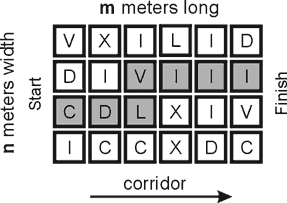

Home Page
F.A.Qs
Statistical Charts
Past Contests
Scheduled Contests
Award Contest
| Online Judge | Problem Set | Authors | Online Contests | User | ||||||
|---|---|---|---|---|---|---|---|---|---|---|
| Web Board Home Page F.A.Qs Statistical Charts | Current Contest Past Contests Scheduled Contests Award Contest | |||||||||
|
Language: “Roman” corridor
Description Let’s remind the notation of Roman numerals. The notation is for natural numbers from 1 to 3999. Capital Latin letters ‘I’, ‘V’, ‘X’, ‘L’, ‘C’, ‘D’, ‘M’ and their combinations are used to represent so called atomic numbers (see the table below).
To put down a number N it is necessary to find the greatest atomic number K which is not greater then N. The Roman notation of the found number K is put down, and the process is repeated for (N-K). The Roman numerals are put down from left to right without spaces. Thus, the number 999 in the Roman notation is CMXCIX (but not IM, as somebody may think). You need to pass through a rectangular corridor. The corridor is n meters width and m meters long (1 ≤ n, m ≤ 15, n*m ≤ 100). It is laid out by square tiles. Each tile is 1 meter width and has a ‘Roman’ symbol on it: ‘I’, ‘V’, ‘X’, ‘L’, ‘C’, ‘D’ or ‘M’. When passing the corridor, you move from one tile to another. From the current tile you may only move to one of adjacent tiles, vertically or horizontally (but not across). You start at the left and end at the right (see the picture below).  Can you pass through the corridor so that the sequence of symbols on the tiles composing your path was a correct number in the Roman notation? Among all possible solutions you need to find the minimal number. Input The first line contains numbers n and m, separated by one or more spaces. Each of the next n lines consists of m characters describing tiles. Output The output contains one line with the found Roman number or the word NO if it is impossible to pass through the corridor in the required way. Sample Input 4 6 VXILID DIVIII CDLXIV ICCXDC Sample Output CDLVIII Source Northeastern Europe 2005, Western Subregion |
[Submit] [Go Back] [Status] [Discuss]
All Rights Reserved 2003-2013 Ying Fuchen,Xu Pengcheng,Xie Di
Any problem, Please Contact Administrator